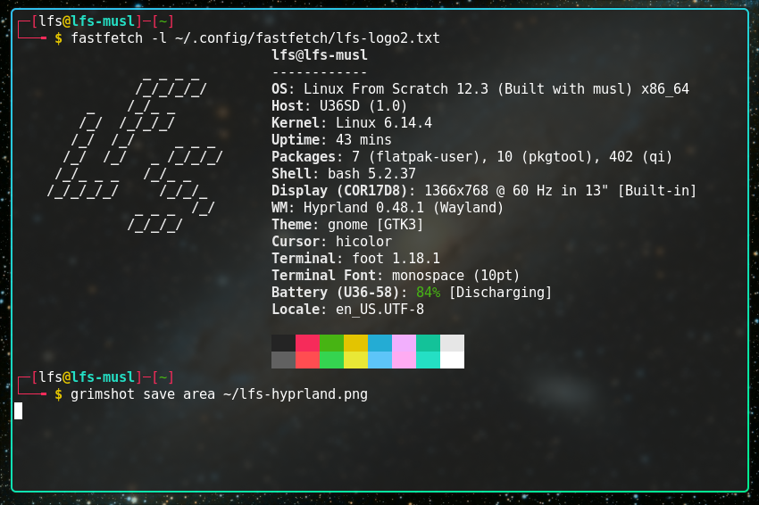
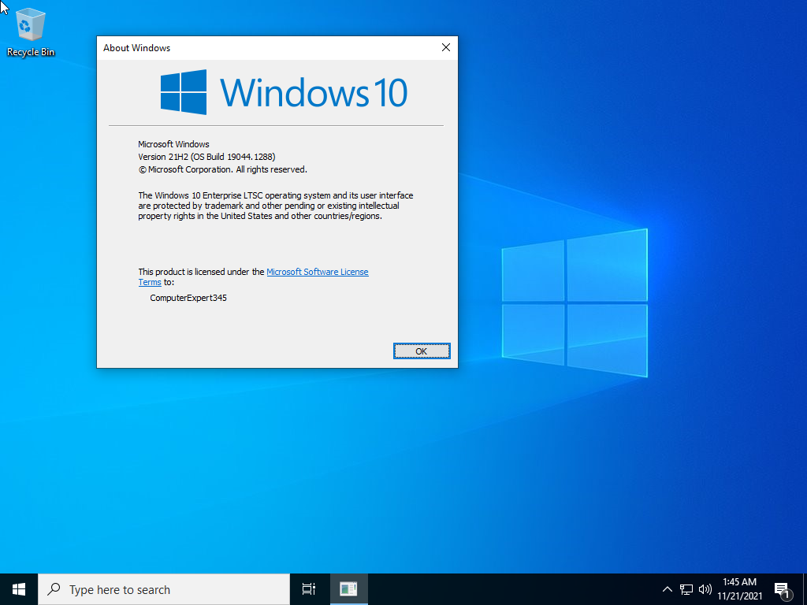

Yaptıklarım
- 📦 Proje 1 – Linux From Scratch kurulumu yaptık ve Hyprland'i kurduk. 
- ⚙️ Proje 2 – Paket Yöneticisi yazdık "WIP"
- 💡 Proje 3 – Windows Tweaklemek
Proje tam olarak bitmediği için burada paylaşmıyorum. Yakın zamanda Github üzerinde paylaşacağım. İzleyerek öğrendiğim serilere bu linke tıklayarak öğrenebilirsin.
Yakın zamanda Windows 10'un desteği biteceği için Bende Hem Hafif Hemde Güvenlik Güncellemeleri alacak bir Sistem yapmayı düşünüyorum. Buradaki Amaç Eski bilgisayarlar için değil ama Modern Sistemlerde Windows 10'u kullanmaya devam edebilmek. Windows 10 Desteği biteceği zaman Güvenlik Güncellemelerinden Mahrum Kalacak. NTLite Adlı Program ile bunu basitleştirecek ve kullanıma sunacağım. Denemek isterseniz Link Burada. 